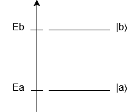
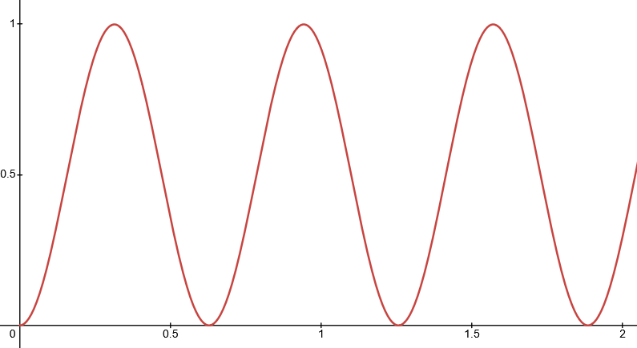
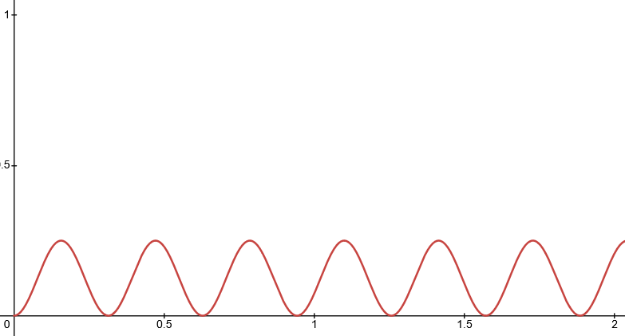
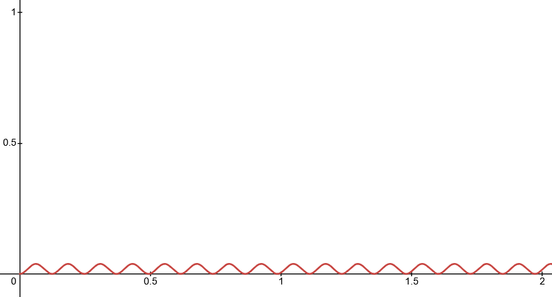
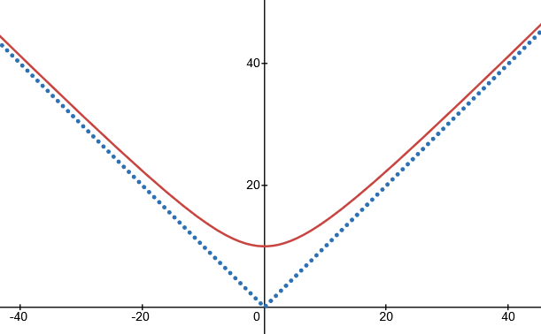
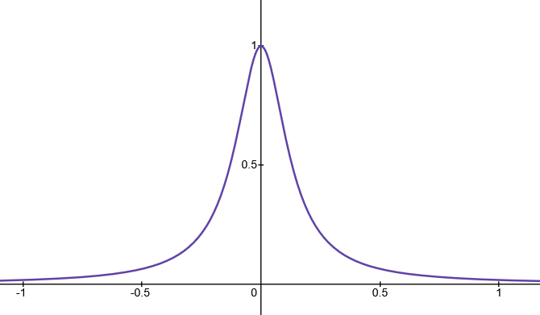

The Rabi Model
Interaction Representation
We saw earlier in the introduction to the time-dependent Schodinger equation that we can separate the Hamiltonian into a time-independent term and a time-depenent term. This time-dependent term can be treated as a perturbation. \[ i\hbar\partial_t|\psi(t)\rangle = \hat H |\psi(t)\rangle = (\hat H_0 + \hat H'(t))|\psi(t)\rangle \] where the "model" Hamiltonian has eigenvectors and eigenvalues: \[ \hat H_0|\varphi_i\rangle = E_i|\varphi_i\rangle \] and the true eigenstate \(|\psi(t)\rangle\) can be written as a linear combination of these model eigenstates, where each component is acted upon by the time evolution operator: \[ |\psi(t)\rangle = \sum_{i=1}^\infty |\varphi_i\rangle c_i(0) e^{-iE_it/\hbar} = e^{-i\hat H_0 t/\hbar}|\psi(0)\rangle \] we can do this because \(|\varphi_i\rangle\) forms a basis, so we can write literally any state as alinear combination of \(|\varphi_i\rangle\)'s.Interaction representation defines a new eigenstate \(|\psi_I(t)\rangle\) as the original wave function \(|\psi(t)\rangle\) propagated back in time to \(t=0\).
We do this because we're now working with two different time-dependent operators, the time evolution that is applied to the states in \(\hat H_0\), and the time-dependent perturbation that \(\hat H'(t)\) describes. In order to focus on \(\hat H'(t)\), we in a sense "ignore" the time evolution \(e^{-i\hat H_0t/\hbar}\) by using: \[ |\psi_I(t)\rangle = e^{i\hat H_0t/\hbar}|\psi(t)\rangle \] In this representation, then, what does the time-dependent Schrodinger equation become? \[\begin{align} |\psi_I(t)\rangle = e^{i\hat H_0t/\hbar}|\psi(t)\rangle &\implies |\psi(t)\rangle = e^{-i\hat H_0t/\hbar}|\psi_I(t)\rangle \\ i\hbar\partial_t(e^{-i\hat H_0 t/\hbar}|\psi_I(t)\rangle) &= (\hat H_0 + \hat H'(t)) e^{-i\hat H_0 t/\hbar}|\psi_I(t)\rangle \\ i\hbar\partial_te^{-i\hat H_0 t/\hbar}|\psi_I(t)\rangle + e^{-i\hat H_0 t/\hbar}i\hbar\partial_t|\psi_I(t)\rangle &= \hat H_0 e^{-i\hat H_0 t/\hbar}|\psi_I(t)\rangle + \hat H'(t)e^{-i\hat H_0 t/\hbar}|\psi_I(t)\rangle \\ i\hbar(\frac{-i\hat H_0}{\hbar})e^{-i\hat H_0 t/\hbar}|\psi_I(t)\rangle + e^{-i\hat H_0 t/\hbar}i\hbar\partial_t|\psi_I(t)\rangle &= \hat H_0 e^{-i\hat H_0 t/\hbar}|\psi_I(t)\rangle + \hat H'(t)e^{-i\hat H_0 t/\hbar}|\psi_I(t)\rangle \\ \hat H_0 e^{-i\hat H_0 t/\hbar}|\psi_I(t)\rangle + e^{-i\hat H_0 t/\hbar}i\hbar\partial_t|\psi_I(t)\rangle &= \hat H_0 e^{-i\hat H_0 t/\hbar}|\psi_I(t)\rangle + \hat H'(t)e^{-i\hat H_0 t/\hbar}|\psi_I(t)\rangle \\ e^{-i\hat H_0 t/\hbar}i\hbar\partial_t|\psi_I(t)\rangle &= \hat H'(t)e^{-i\hat H_0 t/\hbar}|\psi_I(t)\rangle \\ i\hbar\partial_t|\psi_I(t)\rangle &= e^{i\hat H_0 t/\hbar}\hat H'(t)e^{-i\hat H_0 t/\hbar}|\psi_I(t)\rangle \\ \end{align}\] thus we can define a Hamiltonian in the interaction representation as \[ \hat H_I(t) = e^{i\hat H_0 t/\hbar}\hat H'(t)e^{-i\hat H_0 t/\hbar} \] or, in other words, a field-free propagation forward to some time \(t\), the application of \(\hat H'(t)\), and then a field-free propagation back by time \(t\).
So, our TSDE in interaction representation is: \[ i\hbar\partial_t|\psi_I(t)\rangle = \hat H_I(t)|\psi_I(t)\rangle \]
The Rabi Model
The Rabi model consists of a two-level system in a monochromatic external field, and is the simplest model describing the coupling of quantum light and matter (see here). Call the two states in this system \(|a\rangle\) and \(|b\rangle\). Our system is described by the following: \[\begin{align} \hat H(t) &= \hat H_0 + \hat H'(t) \\ \hat H_0|a\rangle &= E_a |a\rangle, \hat H_0|b\rangle = E_b|b\rangle \\ \langle a | a\rangle &= \langle b | b\rangle = 1 \\ \langle a|b\rangle &= 0 \end{align}\]Say the system looks something like this, where state \(|a\rangle\) has a lower energy that \(|b\rangle\)

And that the time-dependent perturbation is an electric field with dipole moment \(\hat\mu\):
\[ \hat H'(t) = -\mathcal E(t)\hat \mu, \mathcal E(t) = \mathcal E_0\sin(\omega t) \] where we assume that the magnitude of the electric field \(\mathcal E_0\) is positive. This electric field is strictly monochromatic, meaning that the field is always in phase with itself. The operator \(\hat \mu\) additionally describes how charge is distributed, or which dipole transitions are allowed. The matrix elements of \(\hat\mu\) are as follows: \[ \mu_{aa} = \langle a | \hat \mu | a \rangle = \mu_{bb} = \langle b|\hat \mu|b\rangle = 0 \] (which makes sense, as \(\hat\mu\) is odd) and for simplicity we assume that \(\mu_{ab}=\mu_{ba} \in \mathbb R^+\).If \(|\psi(t=0)\rangle = |a\rangle\), then what is \(|\psi(t)\rangle\)? To determine thism,, we start with the TDSE in interaction representation, and also say that any state \(|\psi_I(t)\rangle\) in this system can be written as: \[ |\psi_I(t)\rangle = c_a(t)|a\rangle + c_b(t)|b\rangle \] since in this system, \(|a\rangle\) and \(|b\rangle\) form a basis. So the TDSE becomes: \[ i\hbar\partial_t(c_a(t)|a\rangle + c_b(t)|b\rangle) = -e^{i\hat H_0 t/\hbar}\mathcal E_0\sin(\omega t)\hat \mu e^{-i\hat H_0 t/\hbar} (c_a(t)|a\rangle + c_b(t)|b\rangle) \] To solve this, we obtain two different equations by projecting the TDSE onto \(|a\rangle\) and \(|b\rangle\). When we project onto \(|a\rangle\), we get: \[ i\hbar\dot c_a(t) = -\mathcal E_0\sin(\omega t)e^{i\hat H_0 t/\hbar}\langle a|\hat \mu|b\rangle c_b(t)e^{-i\hat H_0 t/\hbar} \] and when we project onto \(|b\rangle\) we get: \[ i\hbar\dot c_b(t) = -\mathcal E_0\sin(\omega t)e^{i\hat H_0 t/\hbar}\langle b|\hat \mu|a\rangle c_a(t)e^{-i\hat H_0 t/\hbar} \] or more succinctly: \[ \begin{cases} i\hbar\dot c_a(t) = -\mathcal E_0\sin(\omega t)\mu_{ab}e^{i(E_a-E_b)t/\hbar}c_b(t) \\ i\hbar\dot c_b(t) = -\mathcal E_0\sin(\omega t)\mu_{ab}e^{i(E_b-E_a)t/\hbar}c_a(t) \end{cases} \] If we define a frequency \(\omega_{ba}\equiv\frac{E_b-E_a}{\hbar}\), where we assume that \(E_b \gt E_a\), \(\omega_{ba}\) is the frequency associated with the energy needed to transition from state \(|a\rangle\) to \(|b\rangle\). We use this to rewrite the above system of equations: \[ \begin{cases} i\hbar\dot c_a(t) = -\frac{\mathcal E_0\mu_{ab}}{2i}(e^{i(\omega - \omega_{ba})t} - e^{-i(\omega + \omega_{ba})t})c_b(t) \\ i\hbar\dot c_b(t) = -\frac{\mathcal E_0\mu_{ab}}{2i}(e^{i(\omega + \omega_{ba})t} - e^{-i(\omega - \omega_{ba})t})c_a(t) \\ \end{cases} \] It turns out that this state is not analytically solvable (or it wasn't, until the 2010s, but the solution is pretty nasty). Instead, we typically use the rotating wave approximation to find the values of \(c(a)\) and \(c(b)\).
Rotating Wave Approximation
We assume that the actual frequency of the field, \(\omega\), is very close to \(\omega_{ba}\), or that \(\delta = \omega - \omega_{ba} \ll \omega_{ba}\). We call \(\delta\) the "detuning" parameter because it's the slight difference from \(\omega_{ba}\), or how much the actual frequency \(\omega\) is detuned from \(\omega_{ba}\).This means that components of our above system that have a frequency of \(\omega-\omega_{ba}\) are oscillation MUCH slower than the components with frequency \(\omega+\omega_{ba}\), which allows us to make our approximation. Let us, for example, look at the first equation in our system: \[\begin{align} i\hbar\dot c_a(t) &= -\frac{\mathcal E_0\mu_{ab}}{2i}(e^{i(\omega - \omega_{ba})t} - e^{-i(\omega + \omega_{ba})t})c_b(t) \\ \dot c_a(t) &= \frac{\mathcal E_0\mu_{ab}}{2\hbar}(e^{i(\omega - \omega_{ba})t} - e^{-i(\omega + \omega_{ba})t})c_b(t) \\ c_a(t) &= \int_{t_0}^t dt \frac{\mathcal E_0\mu_{ab}}{2\hbar}(e^{i(\omega - \omega_{ba})t} - e^{-i(\omega + \omega_{ba})t})c_b(t) \\ &= \int_{t_0}^t dt \frac{\mathcal E_0\mu_{ab}}{2\hbar}(e^{i\delta t} - e^{-i(2\omega_{ba} - \delta)t})c_b(t) \\ \end{align}\] We assume here that \(c_a(t)\) and \(c_b(t)\) change slowly and smoothly, apparently because "\(c_a\) and \(c_b\) are going to change only insofar \(\hat H' \neq 0\), which means that for a range of values \(\mathcal E_0\), both \(c_a\) and \(c_b\) change slowly on the time scale of \(\frac{2\pi}{\omega_{ba}}\)". Because of this, we can say that while \(c_b(t)\) definitely contributes to the integral above, \(c_b(t)e^{i\delta t}\) contributes much more than \(c_b(t)e^{-i(2\omega_{ba} - \delta)t}\) would on the same time interval.
This is because \(e^{-i(2\omega_{ba} - \delta)t}\) oscillates so quickly, and \(c_b(t)\) changes fairly slowly, so we can approximate \(c_b(t)e^{-i(2\omega_{ba} - \delta)t}\) as a rapidly oscillating wave whose amplitude doesn't change much (on this time scale). As a result, the positive oscillations and negative oscillations of this component are constantly "cancelling each other out" in the integral, so to speak.
The rotating wave approximation thus discards the \(e^{-i(2\omega_{ba} - \delta)t}\) terms as we solve for \(c_a\) and \(c_b\). The system of equations is now: \[ \begin{cases} i\hbar\dot c_a = -\frac{\mathcal E_0\mu_{ab}}{2i}e^{i\delta t}c_b(t) \\ i\hbar\dot c_b = +\frac{\mathcal E_0\mu_{ab}}{2i}e^{-i\delta t}c_a(t) \\ \end{cases} \] We solve for \(c_b(t)\) first, and start by defining the fundamental Rabi frequency: \[ \Omega_0 = \frac{\mathcal E_0\mu_{ab}}{\hbar} \] which allows us to rewrite our system as: \[ \begin{cases} \dot c_a = +\frac{\Omega_0}{2}e^{i\delta t}c_b(t) \\ \dot c_b = -\frac{\Omega_0}{2}e^{-i\delta t}c_a(t) \\ \end{cases} \] we can take the derivative of the second equation to get: \[\begin{align} \ddot c_b(t) &= -\frac{\Omega_0}{2}(-i\delta)e^{-i\delta t}c_a(t) - \frac{\Omega_0}{2}e^{-i\delta t}\dot c_a(t) \\ &= -i\delta\dot c_b(t) - \frac{\Omega_0}{2}e^{-i\delta t}(\frac{\Omega_0}{2}e^{i\delta t}c_b(t)) \\ &= -i\delta\dot c_b(t) - \frac{\Omega_0^2}{4}c_b(t) \\ 0 &= \ddot c_b(t) + i\delta\dot c_b(t) + \frac{\Omega_0^2}{4}c_b(t) \end{align}\] This is a second-order differential equation with solution \(c_b(t) = e^{i\lambda t}\), were we include the \(i\) in the exponential so that \(\lambda \in \mathbb R\). Plug in this solution to solve for \(\lambda\): \[\begin{align} \ddot c_b(t) &= -i\delta\dot c_b(t) - \frac{\Omega_0^2}{4}c_b(t) \\ -\lambda^2e^{i\lambda t} &= (-i\delta)i\lambda e^{i\lambda t} - \frac{\Omega_0^2}{4}e^{i\lambda t} \\ -\lambda^2 &= \delta \lambda - \frac{\Omega_0^2}{4} \\ 0 &= \lambda^2 + \delta\lambda - \frac{\Omega_0^2}{4} \\ \lambda_\pm &= -\frac{\delta}{2}\pm\sqrt{\frac{\delta^2}{4} + \frac{\Omega_0^2}{4}} \\ &= \frac{1}{2}\left\{ -\delta \pm \sqrt{\Omega_0^2 + \delta^2}\right\} \\ &= \frac{1}{2}\left\{ -\delta \pm \Omega \right\} \end{align}\] where we define the Rabi frequency to be \(\Omega = \sqrt{\Omega_0^2 + \delta^2}\). Now we know that \[ c_b(t) = Ae^{i\lambda_+t} + B^{i\lambda_-t} = e^{-i\delta t / 2} \left\{ Ae^{i\Omega t} + B^{-i\Omega t}\right\} \] At the initial state \(t=0\), we know that the system is purely in \(|a\rangle\), so we know that \(c_b(0) = 0\), and so \(A + B = 0\) and \(B = -A\), which means: \[ c_b(t) = Ae^{-i\delta t / 2} \left\{ e^{i\Omega t} - e^{-i\Omega t}\right\} = 2iAe^{i\delta t/2}\sin(\Omega t/2) \] (we determine what \(A\) is shortly).
Using the second equation in our system, \(\dot c_b = -\frac{\Omega_0}{2}e^{-i\delta t}c_a(t)\), we know can do the following: \[\begin{align} c_a(t) &= -\frac{2}{\Omega_0}e^{i\delta t}\dot c_b(t) \\ &= -\frac{2}{\Omega_0}e^{i\delta t}\partial_t(2iAe^{i\delta t/2}\sin(\Omega t/2)) \\ &= -\frac{2}{\Omega_0}e^{i\delta t}2iA(-\frac{i\delta}{2}e^{-i\delta t/2}\sin(\frac{\Omega t}{2}) + e^{-i\delta t/2}\frac{\Omega}{2}\cos(\frac{\Omega t}{2})) \\ &= -2iA\frac{\Omega}{\Omega_0}e^{i\delta t/2}(-i\frac{\delta}{\Omega}\sin(\frac{\Omega t}{2})+\cos(\frac{\Omega t}{2})) \end{align}\] because \(c_a(0) = 1\), \(-2iA\frac{\Omega}{\Omega_0}=1\), which means that \(2iA = -\frac{\Omega_0}{\Omega}\). We plug this into our equation above: \[\begin{align} c_a(t) &= -(-\frac{\Omega_0}{\Omega})\frac{\Omega}{\Omega_0}e^{i\delta t/2}(-i\frac{\delta}{\Omega}\sin(\frac{\Omega t}{2})+\cos(\frac{\Omega t}{2})) \\ &= e^{i\delta t/2}(-i\frac{\delta}{\Omega}\sin(\frac{\Omega t}{2})+\cos(\frac{\Omega t}{2})) \\ \end{align}\]
What Happens to the Initial State?
Now that we finally know \(c_a(t)\) and \(c_b(t)\), we can look at what happens to initial state \(|\psi(t=0)\rangle = |a\rangle\) over time. We know, of course, that in this two state system, \(p_a(t) + p_b(t) = |c_a(t)|^2 + |c_b(t)|^2 = 1\). We can find the probability of being in state \(|b\rangle\) at time \(t\): \[\begin{align} p_b(t) &= |c_b(t)|^2 \\ &= |-\frac{\Omega_0}{\Omega}e^{-i\delta t/2}\sin(\omega t/2)|^2 \\ &= \frac{\Omega_0^2}{\Omega^2}\sin^2(\Omega t/2) \\ &= \frac{\Omega_0^2}{\Omega_0^2 + \delta^2}\sin^2(\Omega t/2) \\ \end{align}\] This describes an oscillating probability that has a frequency of \(\Omega\) and an amplitude of \(\frac{\Omega_0^2}{\Omega_0^2 + \delta^2}\), which is never 1 uness \(\delta = 0\). This makes sense, since the detuning parameter \(\delta\) is only 0 if the enegry imparted by the system is exactly the amount need to reach \(|b\rangle\) from \(|a\rangle\).



Above are the plots for \(\Omega_0 = 10\) and \(\delta = 0, \sqrt 3 \Omega_0,\) and \(50\) respectively. Clearly, the amplitude is 1 when \(\delta=0\), and \(\frac{1}{4}\) when \(\delta = \sqrt 3 \Omega_0\). When \(\delta\) is very high, the system is never excited enough to transition from \(|a\rangle\) to \(|b\rangle\), so we see that the probability of being in \(|b\rangle\) is always extremely small.
We can also plot the Rabi frequency \(\Omega\) as a function of \(\delta\):

where \(\Omega = \delta\sqrt{1 + \Omega_0^2/\delta^2}\). At \(\delta \gg \Omega_0\), \(\Omega\) is approximately \(\delta(1 + \Omega_0^2/\delta^2) = \delta + \frac{\Omega_0^2}{2\delta}\) which for large \(\delta\) is very nearly linear in \(\delta\), hence the linear asymptotes above. Also notice that we're really graphing \(\Omega = |\delta|\sqrt{1 + \Omega_0^2/\delta^2}\).
Finally, note that if the detuning is 0, then we have: \[ \begin{cases} c_a(t) = \cos(\Omega t/2) \\ c_b(t) = -\sin(\Omega t/2) \end{cases} \] which exhibits periodic oscillations of population in \(|a\rangle\) and \(|b\rangle\), known as Rabi oscillations. The plot of the maximum value of \(p_b(t)\) as a function of \(\delta\) also peaks at \(\delta=0\), as expected.

(here, we plot \(\frac{1}{1+\delta^2/\Omega_0^2}\), which has the form of a Lorentzian).
In a Lab Setting
Notice that for very small time \(t \ll \frac{2\pi}{\Omega}\), the probability \(p_b(t) = \frac{\Omega_0^2}{\Omega^2}\cdot\frac{\Omega^2 t^2}{4} = \frac{1}{4}\Omega_0^2t^2\), which means that initially we should see a quadratic increase in probability. This is, however, extremely difficult to observe in a lab. In reality, we often see a linear increase instead. This is a result of the three assumptions that we made:- The field is strictly monochromatic, meaning that the coherence time is much less that \(T_{Rabi}\) or that \(\Delta\omega \ll \Omega_0\).
- States \(|a\rangle\) and \(|b\rangle\) are discrete and well defined, meaning that \(\Gamma \ll \Omega_0\) or that we aren't decaying too quickly out of \(|a\rangle\) or \(|b\rangle\).
- We only have a single quantum system, or that all of the systems are identical
We can try to control for this using a cooled gas, a colimated beam, or a huge \(\Omega_0\), but if we don't succeed, not all of our systems in our experiment will have the same tuning. The distribution of tuning, if broad over \(\Omega_0\), causes the linear rather than quadratic increase in \(p_b(t)\).